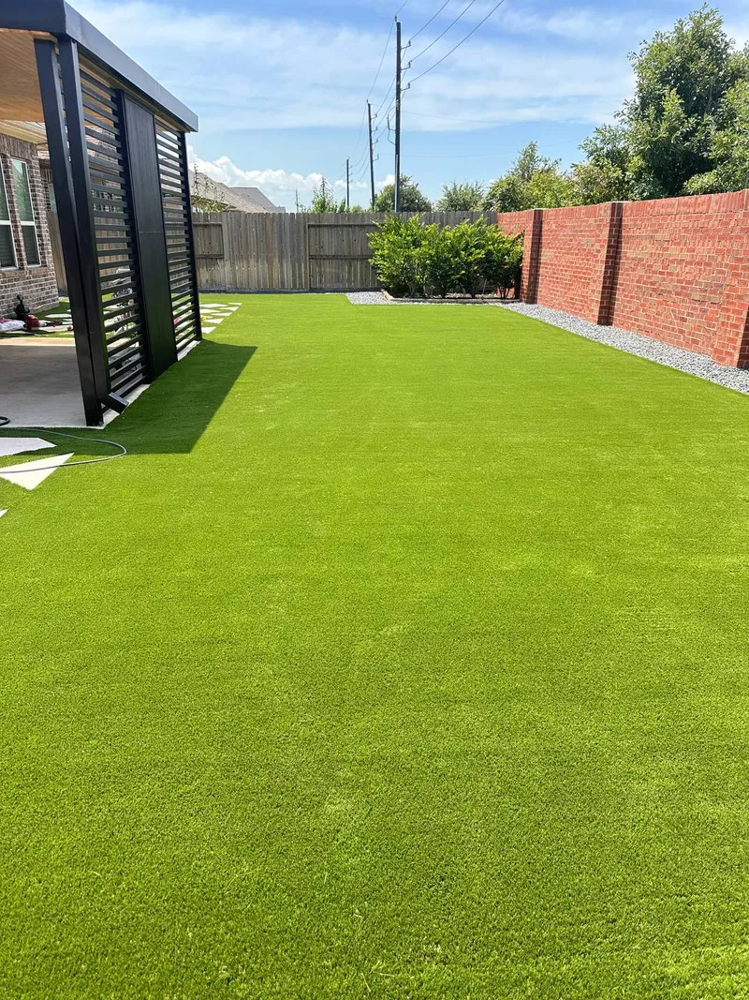
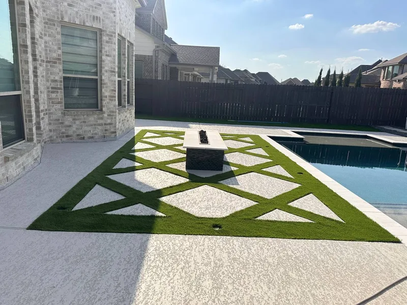
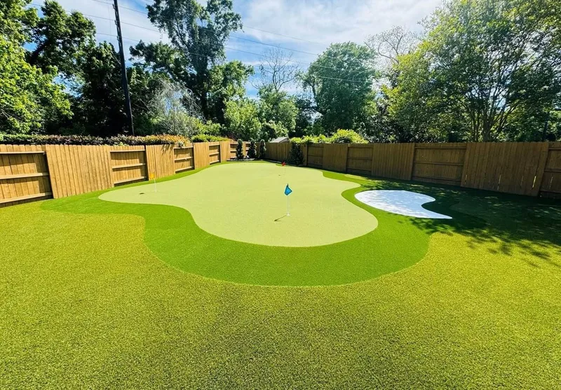
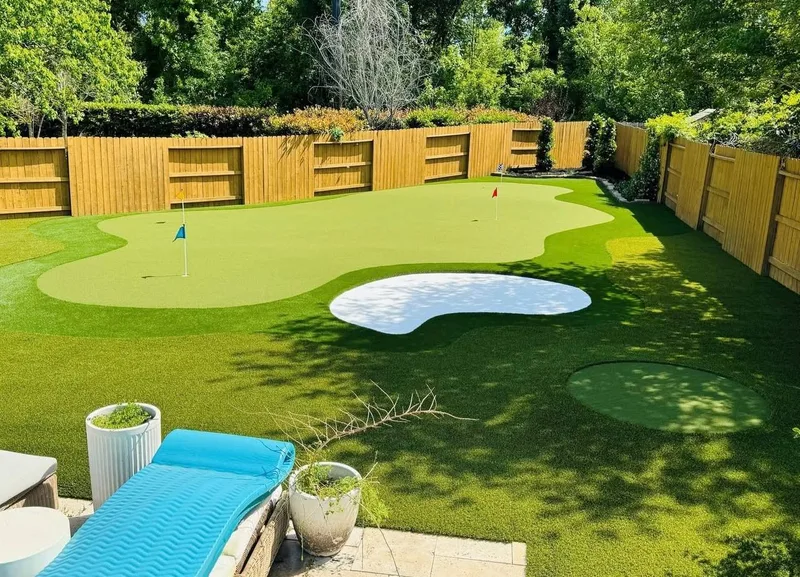
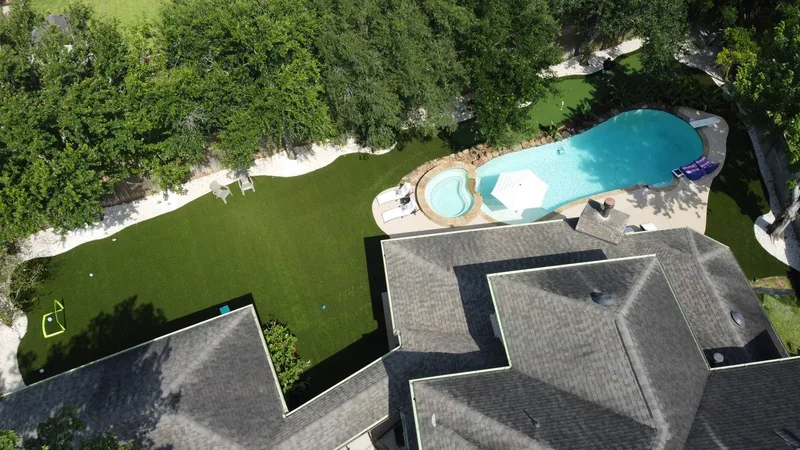
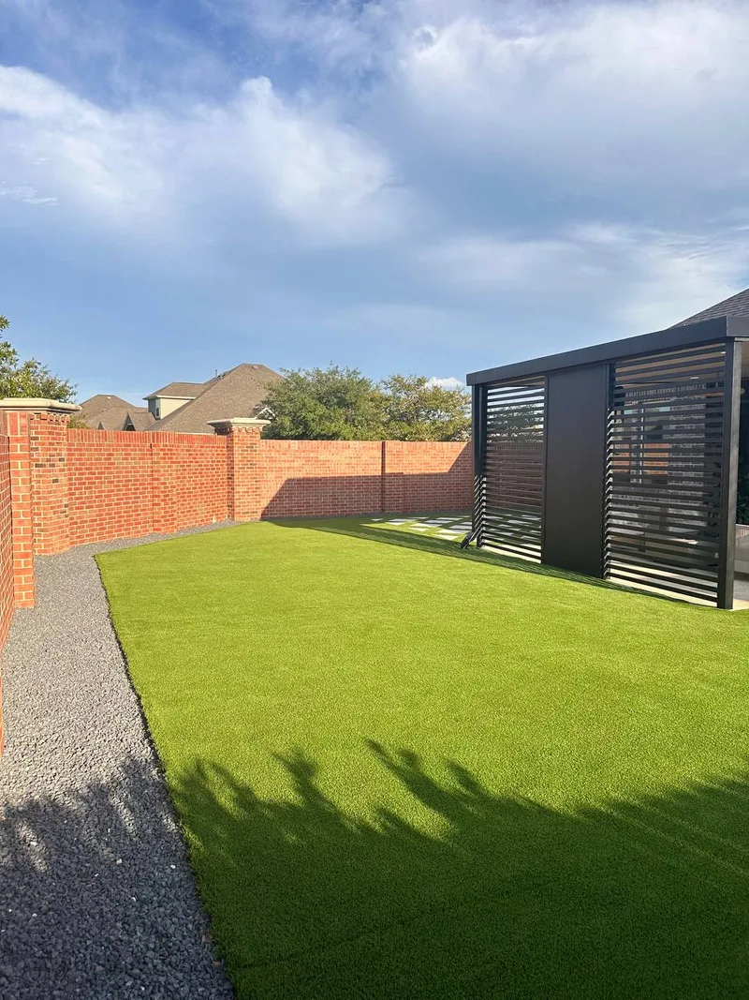

Hardscape that
redefines your
outdoor life.
Premium artificial turf, custom putting greens, paver patios & outdoor living — built to last in Cypress TX.
Northwest Houston's go-to outdoor construction crew.
Cypress is one of the fastest-growing communities in the Houston metro — and its homeowners expect more from their backyards. We deliver complete outdoor transformations: artificial turf, custom putting greens, pergolas, paver patios, outdoor kitchens, and driveways.
From Bridgeland to Towne Lake, we know Cypress. Free on-site consultation and estimates provided as soon as possible.


More projects from the field




Complete hardscape services in Cypress TX
Artificial Turf
Premium synthetic grass that stays lush all year. No mowing, no irrigation, no muddy patches. Built for Texas heat.
See turf work →Custom Putting Greens
Multi-hole greens with contoured undulations, sand bunkers, and chipping areas — all properly drained.
See putting greens →Paver Patios
Concrete pavers, travertine, and flagstone — custom patterns installed perfectly level for lasting beauty.
See patio work →Pergolas & Shade
Aluminum louvered pergolas, wood pergolas, and shade structures that transform your outdoor space.
See pergola work →Outdoor Kitchens
Built-in grills, countertops, and full outdoor kitchen setups — designed for entertaining in Cypress backyards.
See kitchen work →Driveways & Concrete
Stamped concrete, paver driveways, and decorative concrete work that adds serious curb appeal.
See driveway work →Fire Features
Custom fire pits, fire bowls, and gas fire features that make your Cypress outdoor space unforgettable.
See fire features →Patio Covers
Solid patio covers, insulated roofs, and attached structures that protect your outdoor space year-round.
See patio covers →Landscape Lighting
LED path lights, uplighting, and accent fixtures that make your Cypress home shine after dark.
See lighting work →Custom Stonework
Natural stone walls, veneer, columns, and decorative stonework that adds lasting character to any property.
See stonework →Outdoor Living Spaces
Full outdoor room designs — furniture layouts, shade, lighting, and hardscape combined into one seamless space.
See outdoor living →Hardscape FAQ — Cypress TX
Artificial turf in Cypress TX typically runs $12–$20 per square foot installed, depending on turf grade, base prep, and infill. A 500 sq ft backyard runs $6,000–$10,000. Putting greens with contouring cost more. We provide free on-site estimates.
Yes — custom putting greens are one of our signature services in Cypress TX. We design multi-hole greens with sand bunkers, undulations, fringe turf, and chipping areas. Every green is built with proper drainage and a compacted base.
Timeline depends on the scope and complexity of each project. After a full site visit and project analysis, we provide a detailed schedule tailored specifically to your build.
We serve all of Cypress TX including Bridgeland, Towne Lake, Fairfield, Stone Gate, Longwood, Copperfield, Cypress Creek Lakes, and neighborhoods along Highway 290 and Fry Road.
Yes. We use premium turf with heat-dissipating infill designed for Texas summers. Our turf stays cool, drains fast after rain, and looks lush year-round — no irrigation, no mowing.
Serving these Cypress communities
Transform your Cypress backyard.
Free on-site consultation. Estimates provided as soon as possible. No pressure, no obligation.